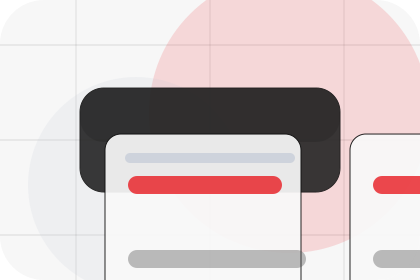
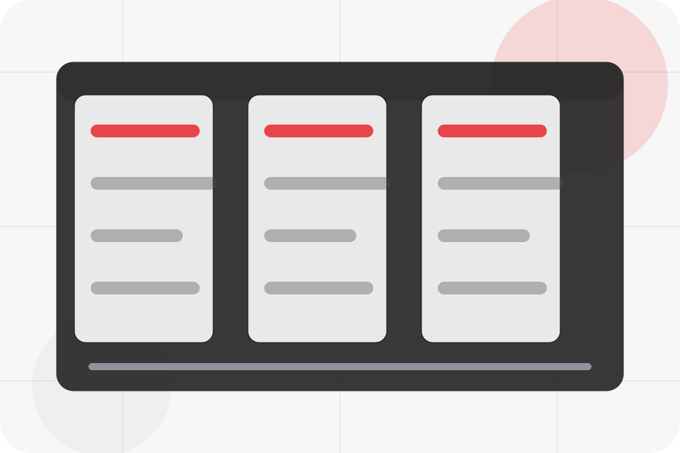
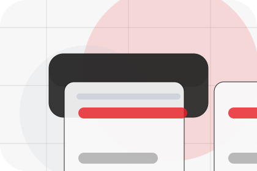
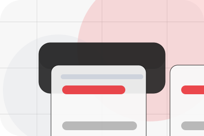
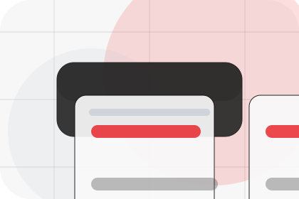
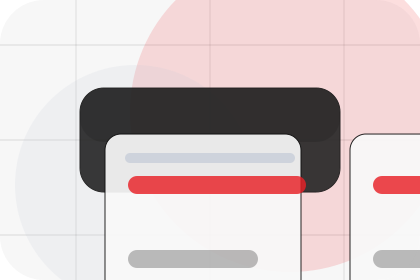
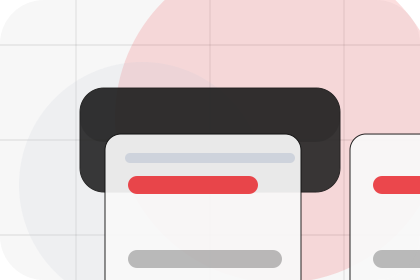
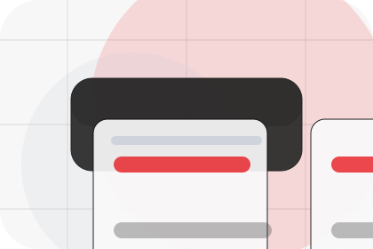
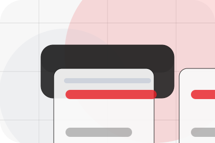
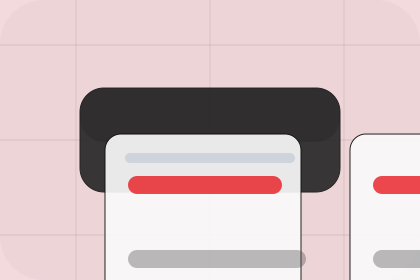

Fit
Who the offer is for, which scope it suits, and when a different route may be better.
Pricing / 01
Pricing opens as a clear energy decision hub: what Vault offers, who it helps, why it matters, and which route to take first.
The first screen combines positioning, proof, primary action, and fast internal navigation, so people can act immediately or compare the rest of the pricing route with context.
Centered product hero
Select the closest route and Vault keeps the next step, proof, and follow-up expectation aligned with cost reduction and resilience.

Pricing / 02
Equipment makes commercial comparison easier by showing fit, scope, and terms before energy visitors ask for the next step.
The layout keeps price-sensitive decisions honest: it separates starting scope, fuller delivery, and ongoing support so the visitor can ask a sharper question.
Explore Pricing
Who the offer is for, which scope it suits, and when a different route may be better.

What is included clearly enough for energy, power & renewable solutions visitors to compare value without hidden jargon.

The practical details that should be confirmed before someone asks to calculate savings.
Pricing / 03
Labour makes commercial comparison easier by showing fit, scope, and terms before energy visitors ask for the next step.
The layout keeps price-sensitive decisions honest: it separates starting scope, fuller delivery, and ongoing support so the visitor can ask a sharper question.
Explore PricingWho the offer is for, which scope it suits, and when a different route may be better.
What is included clearly enough for energy, power & renewable solutions visitors to compare value without hidden jargon.
The practical details that should be confirmed before someone asks to calculate savings.
Pricing / 04
Finance makes commercial comparison easier by showing fit, scope, and terms before energy visitors ask for the next step.
The layout keeps price-sensitive decisions honest: it separates starting scope, fuller delivery, and ongoing support so the visitor can ask a sharper question.
Explore PricingWho the offer is for, which scope it suits, and when a different route may be better.
What is included clearly enough for energy, power & renewable solutions visitors to compare value without hidden jargon.
The practical details that should be confirmed before someone asks to calculate savings.
Pricing / 05
Packages makes commercial comparison easier by showing fit, scope, and terms before energy visitors ask for the next step.
The layout keeps price-sensitive decisions honest: it separates starting scope, fuller delivery, and ongoing support so the visitor can ask a sharper question.
View Pricing
Who the offer is for, which scope it suits, and when a different route may be better.

What is included clearly enough for energy, power & renewable solutions visitors to compare value without hidden jargon.

The practical details that should be confirmed before someone asks to calculate savings.
Who the offer is for, which scope it suits, and when a different route may be better.
ScopedWhat is included clearly enough for energy, power & renewable solutions visitors to compare value without hidden jargon.
QuotedThe practical details that should be confirmed before someone asks to calculate savings.
RetainerPricing / 06
Maintenance explains the operating sequence so visitors can see how the first request becomes a clear recommendation and follow-up.
The steps are written from the visitor side: what they do first, what Vault clarifies, what they receive, and how support continues.
Explore PricingHow visitors begin this route and what detail is useful at the first step.
Pricing / 07
Inclusions makes commercial comparison easier by showing fit, scope, and terms before energy visitors ask for the next step.
The layout keeps price-sensitive decisions honest: it separates starting scope, fuller delivery, and ongoing support so the visitor can ask a sharper question.
Explore PricingWho the offer is for, which scope it suits, and when a different route may be better.

What is included clearly enough for energy, power & renewable solutions visitors to compare value without hidden jargon.

The practical details that should be confirmed before someone asks to calculate savings.
Pricing / 08
Comparison makes commercial comparison easier by showing fit, scope, and terms before energy visitors ask for the next step.
The layout keeps price-sensitive decisions honest: it separates starting scope, fuller delivery, and ongoing support so the visitor can ask a sharper question.
Explore PricingWho the offer is for, which scope it suits, and when a different route may be better.
What is included clearly enough for energy, power & renewable solutions visitors to compare value without hidden jargon.
The practical details that should be confirmed before someone asks to calculate savings.
Pricing / 09
Terms makes commercial comparison easier by showing fit, scope, and terms before energy visitors ask for the next step.
The layout keeps price-sensitive decisions honest: it separates starting scope, fuller delivery, and ongoing support so the visitor can ask a sharper question.
Explore PricingWho the offer is for, which scope it suits, and when a different route may be better.
What is included clearly enough for energy, power & renewable solutions visitors to compare value without hidden jargon.
The practical details that should be confirmed before someone asks to calculate savings.
Pricing / 10
Vault closes the pricing route with a clear action, a quick reminder of the value, and a low-friction way to calculate savings.
Visitors who are ready can use the primary action. Visitors who are still comparing can scan the section links, proof, and support routes before they calculate savings.
Calculate SavingsThe final block keeps the choice simple: act now, compare one more proof route, or send enough detail for a focused response.
Calculate Savingscost reduction and resilience
A renewable energy product site with minimalist hero, savings modules, battery/solar cards, and direct calculator. Pricing ends with a direct path to calculate savings, plus enough context for visitors who still need to compare.

Calculate SavingsInformation is provided for planning and should be reviewed for the final client, location, and operating rules.